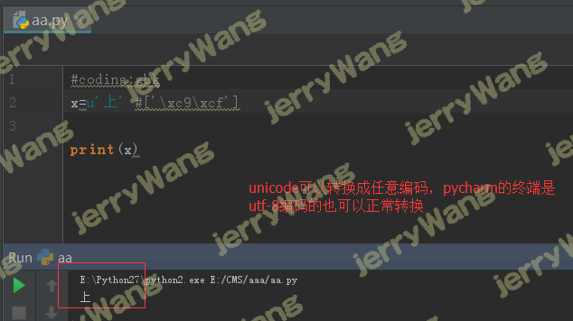

Windows环境下安装Py2和Py3 一. python 安装 下载安装包 1 2 3 https://www.python.org/ftp/python/2.7.14/python-2.7.14.amd64.msi # 2.7安装包 https://www.python.org/ftp/python/3.6.4/python-3.6.4-amd64.exe # 3.6安装包
安装python3.6 增加环境变量
在命令行测试
安装python2.7
将python2增加到环境变量里 1 C:\Python27\Scripts\;C:\Python27\;
将C: Python27目录下的python.exe 和pythonw.exe 改为python2.exe 和pythonw2.exe
将C: Python36目录下的python.exe 和pythonw.exe 改为python3.exe 和pythonw3.exe
此时在命令行输入python3代表python3 输入python2代表python2
二. pip安装 1 2 3 4 5 6 7 8 9 # 在cmd上执行 python3 -m pip install --upgrade pip --force-reinstall python2 -m pip install --upgrade pip --force-reinstall # 查看pip版本 pip3 -V pip2 -V
Python简介以及入门 一、python介绍 python的创始人为吉多·范罗苏姆（Guido van Rossum）。1989年的圣诞节期间，Guido开始写Python语言的编译器。Python这个名字，来自Guido所挚爱的电视剧Monty Python’s Flying Circus。他希望这个新的叫做Python的语言，能符合他的理想：创造一种C和shell之间，功能全面，易学易用，可拓展的语言。
最新的TIOBE排行榜，Python赶超PHP占据第4， Python崇尚优美、清晰、简单，是一个优秀并广泛使用的语言。
Python可以应用于众多领域，如：数据分析、组件集成、网络服务、图像处理、数值计算和科学计算等众多领域。目前业内几乎所有大中型互联网企业都在使用Python，如：Youtube、Dropbox、BT、Quora（中国知乎）、豆瓣、知乎、Google、Yahoo!、Facebook、NASA、百度、腾讯、汽车之家、美团等。
二、目前python的主要领域 WEB开发——最火的Python web框架Django, 支持异步高并发的Tornado框架，短小精悍的flask,bottle, Django官方的标语把Django定义为the framework for perfectionist with deadlines(大意是一个为完全主义者开发的高效率web框架) 网络编程——支持高并发的Twisted网络框架， py3引入的asyncio使异步编程变的非常简单 爬虫——爬虫领域，Python几乎是霸主地位，Scrapy\Request\BeautifuSoap\urllib等，想爬啥就爬啥 云计算——目前最火最知名的云计算框架就是OpenStack,Python现在的火，很大一部分就是因为云计算 人工智能——谁会成为AI 和大数据时代的第一开发语言？这本已是一个不需要争论的问题。如果说三年前，Matlab、Scala、R、Java 和 Python还各有机会，局面尚且不清楚，那么三年之后，趋势已经非常明确了，特别是前两天 Facebook 开源了 PyTorch 之后，Python 作为 AI 时代头牌语言的位置基本确立，未来的悬念仅仅是谁能坐稳第二把交椅。 自动化运维——问问中国的每个运维人员，运维人员必须会的语言是什么？10个人相信会给你一个相同的答案，它的名字叫Python 金融分析——我个人之前在金融行业，10年的时候，我们公司写的好多分析程序、高频交易软件就是用的Python,到目前,Python是金融分析、量化交易领域里用的最多的语言 科学运算—— 你知道么,97年开始，NASA就在大量使用Python在进行各种复杂的科学运算，随着NumPy, SciPy, Matplotlib, Enthought librarys等众多程序库的开发，使的Python越来越适合于做科学计算、绘制高质量的2D和3D图像。和科学计算领域最流行的商业软件Matlab相比，Python是一门通用的程序设计语言，比Matlab所采用的脚本语言的应用范围更广泛 游戏开发——在网络游戏开发中Python也有很多应用。相比Lua or C++,Python 比 Lua 有更高阶的抽象能力，可以用更少的代码描述游戏业务逻辑，与 Lua 相比，Python 更适合作为一种 Host 语言，即程序的入口点是在 Python 那一端会比较好，然后用 C/C++ 在非常必要的时候写一些扩展。Python 非常适合编写 1 万行以上的项目，而且能够很好地把网游项目的规模控制在 10 万行代码以内。另外据我所知，知名的游戏<文明> 就是用Python写的 三、Python在一些公司的应用 谷歌：Google App Engine 、code.google.com 、Google earth 、谷歌爬虫、Google广告等项目都在大量使用Python开发 CIA: 美国中情局网站就是用Python开发的 NASA: 美国航天局(NASA)大量使用Python进行数据分析和运算 YouTube:世界上最大的视频网站YouTube就是用Python开发的 Dropbox:美国最大的在线云存储网站，全部用Python实现，每天网站处理10亿个文件的上传和下载 Instagram:美国最大的图片分享社交网站，每天超过3千万张照片被分享，全部用python开发 Facebook:大量的基础库均通过Python实现的 Redhat: 世界上最流行的Linux发行版本中的yum包管理工具就是用python开发的 豆瓣: 公司几乎所有的业务均是通过Python开发的 知乎: 国内最大的问答社区，通过Python开发(国外Quora) 春雨医生：国内知名的在线医疗网站是用Python开发的 除上面之外，还有搜狐、金山、腾讯、盛大、网易、百度、阿里、淘宝 、土豆、新浪、果壳等公司都在使用Python完成各种各样的任务。 三、Python的发展史 1989年，Guido开始写Python语言的编译器。
1991年，第一个Python编译器诞生。它是用C语言实现的，并能够调用C语言的库文件。从一出生，Python已经具有了：类，函数，异常处理，包含表和词典在内的核心数据类型，以及模块为基础的拓展系统。
Granddaddy of Python web frameworks, Zope 1 was released in 1999
Python 1.0 - January 1994 增加了 lambda, map, filter and reduce.
Python 2.0 - October 16, 2000，加入了内存回收机制，构成了现在Python语言框架的基础
Python 2.4 - November 30, 2004, 同年目前最流行的WEB框架Django 诞生
Python 2.5 - September 19, 2006
Python 2.6 - October 1, 2008
Python 2.7 - July 3, 2010
In November 2014, it was announced that Python 2.7 would be supported until 2020, and reaffirmed that there would be no 2.8 release as users were expected to move to Python 3.4+ as soon as possible
Python 3.0 - December 3, 2008 (这里要解释清楚 为什么08年就出3.0，2010年反而又推出了2.7？是因为3.0不向下兼容2.0，导致大家都拒绝升级3.0，无奈官方只能推出2.7过渡版本)
Python 3.1 - June 27, 2009
Python 3.2 - February 20, 2011
Python 3.3 - September 29, 2012
Python 3.4 - March 16, 2014
Python 3.5 - September 13, 2015
Python 3.6 - 2016-12-23 发布python3.6.0版
四、Python有哪些种类？ Cpython,Ipython,PyPy,Jpython,IronPython
Hello World！ 强调：python解释器执行程序是解释执行，即打开文件读内容，因此文件的后缀名没有硬性限制，但通常定义为.py结尾 各种语言的hello world，看一看还是python的简单
1 2 3 4 5 6 7 8 9 10 11 12 13 14 15 16 17 18 19 20 21 22 23 24 25 26 27 28 29 30 31 32 33 34 35 36 37 38 39 40 41 42 int main(void) { std::cout<<"Hello world" ; } int main(void){ printf("\nhello world!" ); return 0 ;} public class HelloWorld { // 程序的入口 public static void main(String args[]){ // 向控制台输出信息 System.out.println("Hello World!" ); } } <?php echo "hello world!" ; ?> 日本人开发的，砸日本车的时候，顺手就把你拖出去打死了，祭天 puts "Hello world." package main import "fmt" func main(){ fmt.Printf("Hello World!\n God Bless You!" ); } print ("Hello World" )
用户交互 古时候，我们去银行取钱，需要有一个银行业务员等着我们把自己的账号密码输入给他，然后他去进行验证，成功后，我们再将取款金额输入/告诉他
骄傲的现代人，会为客户提供一台ATM机（就是一台计算机），让ATM机跟用户交互，从而取代人力。然而机器是死的，我们必须为其编写程序来运行，这就要求我们的编程语言中能够有一种能与用户交互，接收用户输入数据的机制
1 2 3 4 5 6 input ：用户输入任何值，都存成字符串类型input ：用户输入什么类型，就存成什么类型raw_input：等于python3的input
注释 随着学习的深入，用不了多久，你就可以写复杂的上千甚至上万行的代码啦，有些代码你花了很久写出来，过了些天再回去看，发现竟然看不懂了，这太正常了。 另外，你以后在工作中会发现，一个项目多是由几个甚至几十个开发人员一起做，你要调用别人写的代码，别人也要用你的，如果代码不加注释，你自己都看不懂，更别说别人了，这产会挨打的。所以为了避免这种尴尬的事情发生，一定要增加你代码的可读性。
代码注释分单行和多行注释， 单行注释用#，多行注释可以用三对双引号""" """
Python之数据类型 引子 1 什么是数据？
x=10，10是我们要存储的数据
2 为何数据要分不同的类型
数据是用来表示状态的，不同的状态就应该用不同的类型的数据去表示
3 数据类型
数字（整形，长整形，浮点型，复数）
字节串 ( 在介绍字符编码时介绍字节bytes类型 )
列表
元组
字典
集合
4 按照以下几个点展开数据类型的学习
1 2 3 4 5 6 7 8 9 存一个值or 存多个值 有序or 无序 可变or 不可变（1 、可变：值变，id 不变。可变==不可hash 2 、不可变：值变，id 就变。不可变==可hash ）
数字 1 2 3 4 5 6 7 8 9 10 11 12 13 14 15 16 17 18 19 20 21 22 23 24 25 26 27 作用：年纪，等级，身份证号，qq号等整型数字相关 定义： age=10 作用：薪资，身高，体重，体质参数等浮点数相关 salary=3000.3 1. bin ()函数将十进制转换成而进制2. oct ()函数将十进制转换成八进制3. hex ()函数将十进制转换成十六进制 在python2中（python3中没有长整形的概念）： >>> num=2L >>> type (num) <type 'long' > >>> x=1 -2j >>> x.real 1.0 >>> x.imag -2.0
字符串 %s,%d 举例1：name=’allen’
age=20
print(“my name is %s my age is %s” %(name,age))#%s既能接受字符串，也能接受数字
print(‘my name is %s my age is %d’ %(name,age))#%d只能接受数字
举例2：用户信息的显示
1 2 3 4 5 6 7 8 9 10 11 12 13 14 while True : name=input ("name:" ) age=input ("age:" ) sex=input ("sex:" ) height=input ("height:" ) msg=''' ------------%s info----------- name:%s age:%s sex:%s height:%s ------------------------------ ''' %(name,name,age,sex,heigth) print (msg)
运行结果如下：
type
1 2 name='allen' print (type (name))
优先掌握
移除 1 2 3 4 5 6 7 8 9 10 11 12 13 14 15 16 17 18 19 msg=' hello ' print (msg)print (msg.strip())移除‘*’ msg='***hello*********' msg=msg.strip('*' ) print (msg)print (msg.lstrip('*' ))print (msg.rstrip('*' )) while True : name=input ('user: ' ).strip() password=input ('password: ' ).strip() if name == 'allen' and password == '123' : print ('login successfull' )
切分 1 2 3 4 5 6 7 8 9 10 11 12 13 14 15 16 17 18 19 20 21 22 info='root:x:0:0::/root:/bin/bash' print (info[0 ]+info[1 ]+info[2 ]+info[3 ])user_l=info.split(':' ) print (user_l[0 ])msg='hello world allen say hahah' print (msg.split()) cmd='download|xhp.mov|3000' cmd_l=cmd.split('|' ) print (cmd_l[1 ])print (cmd_l[0 ])print (cmd.split('|' ,1 )) while True : cmd=input ('>>: ' ).strip() if len (cmd) == 0 :continue cmd_l=cmd.split() print ('命令是:%s 命令的参数是:%s' %(cmd_l[0 ],cmd_l[1 ]))
长度 索引 1 2 3 4 5 切片:切出子字符串 msg='hello world' print (msg[1 :3 ]) print (msg[1 :4 ])
判断字符串开头or结尾 1 2 3 4 name='alex_SB' print (name.endswith('SB' ))print (name.startswith('alex' ))
字符串替换 1 2 3 name='alex say :i have one tesla,my name is alex' print (name.replace('alex' ,'SB' ,1 ))
1 2 3 4 print ('my name is %s my age is %s my sex is %s' %('allen' ,18 ,'male' ))print ('my name is {} my age is {} my sex is {}' .format ('allen' ,18 ,'male' ))print ('my name is {0} my age is {1} my sex is {0}:{2}' .format ('allen' ,18 ,'male' ))print ('my name is {name} my age is {age} my sex is {sex}' .format (sex='male' ,age=18 ,name='allen' ))
find,index,count 1 2 3 4 name='goee say hello' print (name.find('S' ,1 ,3 )) print (name.index('S' )) print (name.count('S' ,1 ,5 ))
字符串拼接 1 2 3 4 5 6 info='root:x:0:0::/root:/bin/bash' print (info.split(':' ))l=['root' , 'x' , '0' , '0' , '' , '/root' , '/bin/bash' ] print (':' .join(l))
转换大小写 1 2 3 4 name='eGon' print (name.lower())print (name.upper())
了解部分
把tab符号（’\ t’）转为空格 1 2 3 4 name='allen\thello' print (name)print (name.expandtabs(1 ))
左,右,居中-填充 1 2 3 4 5 6 name='allen' print (name.center(30 ,'-' ))print (name.ljust(30 ,'*' ))print (name.rjust(30 ,'*' ))print (name.zfill(50 ))
首字母大小写,大小写翻转 1 2 3 4 5 6 name='eGon' print (name.capitalize()) print (name.swapcase()) msg='allen say hi' print (msg.title())
字符串-数字 1 2 3 4 5 6 7 8 9 10 11 12 13 14 15 16 17 18 19 20 21 22 23 24 25 26 27 28 29 30 31 32 33 34 35 36 37 38 39 num0='4' num1=b'4' num2=u'4' num3='四' num4='Ⅳ' print (num0.isdigit())print (num1.isdigit())print (num2.isdigit())print (num3.isdigit())print (num4.isdigit()) num0='4' num1=b'4' num2=u'4' num3='四' num4='Ⅳ' print (num0.isdecimal())print (num1)print (num2.isdecimal())print (num3.isdecimal())print (num4.isdecimal()) num0='4' num1=b'4' num2=u'4' num3='四' num4='Ⅳ' print (num0.isnumeric())print (num1)print (num2.isnumeric())print (num3.isnumeric())print (num4.isnumeric())
is开头的其他用法 1 2 3 4 5 6 7 8 9 10 11 12 13 14 name='allen123' print (name.isalnum()) name='asdfasdfa sdf' print (name.isalpha()) name='asdfor123' print (name.isidentifier()) name='allen' print (name.islower()) print (name.isupper()) print (name.isspace()) name='allen say' print (name.istitle())
列表 1 2 3 4 5 6 my_girl_friends=['lurac' ,'wupeiqi' ,'yuanhao' ,4 ,5 ] 或 l=list ('abc' )
按索引存取值,切片 1 2 3 4 5 6 7 8 9 10 11 12 l=['a' ,'b' ,'c' ,'d' ,'e' ,'f' ] print (l[5 ])print (l(-3 ))
长度 1 2 hobbies=['play' ,'eat' ,'sleep' ,'study' ] print (len (hobbies))
成员运算in和not in 1 2 3 4 5 6 7 hobbies=['play' ,'eat' ,'sleep' ,'study' ] print ('sleep' in hobbies)msg='hello world allen' print ('allen' not in msg)
追加 1 2 3 hobbies=['play' ,'eat' ,'sleep' ,'study' ] hobbies.append('girls' ) print (hobbies)
插入 1 2 3 4 5 6 7 8 9 10 11 12 hobbies=['play' ,'eat' ,'sleep' ,'study' ,'eat' ,'eat' ] hobbies.insert(1 ,'walk' ) hobbies.insert(1 ,['walk1' ,'walk2' ,'walk3' ]) print (hobbies)print (hobbies.count('eat' )) hobbies.extend(['walk1' ,'walk2' ,'walk3' ])
清空 复制 翻转 排序 1 2 3 4 5 6 7 8 9 10 11 12 13 14 15 16 17 18 19 20 21 22 hobbies=['play' ,'eat' ,'sleep' ,'study' ,'eat' ,'eat' ] hobbies.clear() l=hobbies.copy() print (l)l=[1 ,2 ,3 ,4 ,5 ] l.reverse() l=[100 ,9 ,-2 ,11 ,32 ] l.sort(reverse=True ) l=sorted (l) print (l)
删除 1 2 3 4 5 6 7 8 hobbies=['play' ,'eat' ,'sleep' ,'study' ] x=hobbies.pop(1 ) print (x)print (hobbies)del hobbies[1 ] hobbies.remove('eat' )
循环 1 2 3 hobbies=['play' ,'eat' ,'sleep' ,'study' ] for l in hobbies: print (l)
队列：先进先出 1 2 3 4 5 6 7 8 9 10 queue_l=[] queue_l.append('first' ) queue_l.append('second' ) queue_l.append('third' ) print (queue_l)print (queue_l.pop(0 ))print (queue_l.pop(0 ))print (queue_l.pop(0 ))
堆栈:先进后出，后进先出 1 2 3 4 5 6 7 8 9 10 l=[] l.append('first' ) l.append('second' ) l.append('third' ) print (l)print (l.pop())print (l.pop())print (l.pop())
元祖 1 2 3 4 age=(11 ,22 ,33 ,44 ,55 )本质age=tuple ((11 ,22 ,33 ,44 ,55 ))
按索引存取值，切片 1 2 3 4 5 6 goods=('iphone' ,'lenovo' ,'sanxing' ,'suoyi' ) print (goods[1 :3 ])print (goods[-1 ])print (goods[1 :4 :2 ])
长度 in 或 not in 1 2 3 4 5 6 7 8 9 10 11 goods=('iphone' ,'lenovo' ,'sanxing' ,'suoyi' ) print ('iphone' in goods)看的是里面的元素在不在里面d={'a' :1 ,'b' :2 ,'c' :3 } print ('b' in d) 看的是key在不在d里面
查找索引，计数 1 2 3 goods=('iphone' ,'lenovo' ,'sanxing' ,'suoyi' ) print (goods.index('iphone' ))print (goods.count('iphone' )
作为字典Key 1 2 3 d={(1 ,2 ,3 ):'allen' } print (d,type (d),d[(1 ,2 ,3 )])
补充：外部不可变，内部可变 1 2 3 4 5 6 7 t=(1 ,['a' ,'b' ],'sss' ,(1 ,2 )) t[1 ][0 ]='A' print (t)t[1 ]='eeeeeeeeeeeeeeeeeee'
字典 1 2 3 4 5 6 7 8 9 10 info={'name' :'allen' ,'age' :18 ,'sex' :'male' } 或 info=dict (name='allen' ,age=18 ,sex='male' ) 或 info=dict ([['name' ,'allen' ],('age' ,18 )]) 或 {}.fromkeys(('name' ,'age' ,'sex' ),None )
取/存/修改 1 2 3 4 5 6 7 8 9 10 11 12 13 14 15 16 17 18 19 20 21 22 23 24 25 26 27 28 29 30 31 32 33 34 35 36 37 38 39 40 41 42 43 44 45 info_dic={'name' :'allen' ,'age' :18 ,'sex' :'male' } print (info_dic['name' ])print (info_dic['name11111111' ])print (info_dic.get('name' ,None ))print (info_dic.get('name222222' ,None ))info_dic['hobbies' ]='大东区' or info_dic['hobbies' ]=[] info_dic['hobbies' ].append('study' ) info_dic['hobbies' ].append('read' ) print (info_dic)info_dic['level' ]=10 print (info_dic)info_dic={'name' :'allen' ,'age' :18 ,'sex' :'male' } info_dic.setdefault('hobbies' ,[1 ,2 ]) print (info_dic)info_dic.setdefault('hobbies' ,[1 ,2 ,3 ,4 ,5 ]) print (info_dic)info_dic.setdefault('hobbies' ,[]).append('study' ) print (info_dic)l=info_dic.setdefault('hobbies' ,[]) print (l,id (l))print (id (info_dic['hobbies' ]))info_dic={'name' :'allen' ,'age' :18 ,'sex' :'male' } info_dic.update({'a' :1 ,'name' :'Allen' ,'age' :12 }) print (info_dic)
删除 1 2 3 4 5 6 7 8 9 10 11 12 info_dic={'name' :'allen' ,'age' :18 ,'sex' :'male' } print (info_dic.pop('nam123123123123123123e' ,None ))print (info_dic)print (info_dic.popitem())print (info_dic)del info_dic['name' ]
键，值，键值对 1 2 3 4 5 6 7 8 9 10 11 12 13 info_dic={'name' :'allen' ,'age' :18 ,'sex' :'male' } print (info_dic.keys())print (info_dic.values())print (info_dic.items())for k in info_dic: print (k,info_dic[k])
补充 1 2 3 4 5 6 7 8 9 info_dic={'name' :'allen' ,'age' :18 ,'sex' :'male' } print (len (info_dic)) d=info_dic.copy() print (d)info_dic.clear() print (info_dic)
集合 1 2 3 4 5 s=set ([1 ,2 ,2 ,3 ,3 ,3 ]) s={1 , 2 , 3 } type (l)=<class 'set' >
作用：去重，关系运算
定义：可以包含多个元素，用逗号分割，集合的元素遵循三个原则：
1.每个元素必须是不可变类型（可hash，可作为字典的key）
2.没有重复的元素
4.无序
注意集合的目的是将不同的值存放到一起，不同的集合间用来做关系运算，无需纠结于集合中单个值
关系运算 1 2 3 4 5 6 7 8 9 10 11 pythons={'zhuzhuxia' ,'allen' ,'peiqi' ,'gangdan' } linuxs={'peiqi' ,'allen' ,'gangdan' ,'feizhu' } print (pythons & linuxs) print (pythons | linuxs) print (pythons - linuxs) print (pythons ^ linuxs)
方法 1 2 3 4 5 6 7 8 9 10 11 12 13 14 15 16 17 18 linuxs = {'six' , 'wu' , 'dabao' } linuxs.add('xiaoxiao' ) res=linuxs.pop() res=linuxs.remove('wupeiqi' ) res=linuxs.discard('allen1111111111' ) linuxs={'wupeiqi' ,'allen' ,'susan' ,'hiayan' } new_set={'xxx' ,'fenxixi' } linuxs.update(new_set) print (linuxs)linuxs.copy() linuxs.clear() a,*_={'zzz' ,'sss' ,'xxxx' ,'cccc' ,'vvv' ,'qqq' } print (a)
数据类型总结 1、可变：值变，id不变。可变==不可hash
1 2 3 4 5 6 7 按存储空间的占用分（从低到高） 数字 字符串 集合：无序，即无序存索引相关信息 元组：有序，需要存索引相关信息，不可变 列表：有序，需要存索引相关信息，可变，需要处理数据的增删改 字典：无序，需要存key与value映射的相关信息，可变，需要处理数据的增删改
去重 1 2 3 4 5 6 7 8 9 10 11 12 13 14 15 16 17 18 19 20 21 22 23 24 25 26 27 28 29 30 31 32 33 34 35 36 37 38 39 40 41 42 43 44 45 46 47 48 l=['a' ,'b' ,1 ,'a' ,'a' ] print (set (l))q=[] for i in l: if i not in q: q.append(i) print (q)import oswith open ('db.txt' ,'r' ,encoding='utf-8' ) as read_f,\ open ('.db.txt.swap' ,'w' ,encoding='utf-8' ) as write_f: s=set () for line in read_f: if line not in s: s.add(line) write_f.write(line) os.remove('db.txt' ) os.rename('.db.txt.swap' ,'db.txt' ) l=[ {'name' :'allen' ,'age' :18 ,'sex' :'male' }, {'name' :'alex' ,'age' :73 ,'sex' :'male' }, {'name' :'allen' ,'age' :20 ,'sex' :'female' }, {'name' :'allen' ,'age' :18 ,'sex' :'male' }, {'name' :'allen' ,'age' :18 ,'sex' :'male' }, ] s=set () l1=[] for item in l: val=(item['name' ],item['age' ],item['sex' ]) if val not in s: s.add(val) l1.append(item) print (l1)def func (items,key=None ): s=set () for item in items: val=item if key is None else key(item) if val not in s: s.add(val) yield item print (list (func(l,key=lambda dic:(dic['name' ],dic['age' ],dic['sex' ]))))
按存值个数区分 标量／原子类型 数字，字符串 容器类型 列表，元组，字典
按可变不可变区分 按访问顺序区分 直接访问 数字 顺序访问（序列类型） 字符串，列表，元组 key值访问（映射类型） 字典
运算符 1 2 3 4 5 6 7 8 9 10 11 is 比较的是id ，而双等号比较的是值毫无疑问，id 若相同则值肯定相同，而值相同id 则不一定相同 x=1234567890 y=1234567890 x == y id (x),id (y)x is y
and注解：
在Python 中，and 和 or 执行布尔逻辑演算，如你所期待的一样，但是它们并不返回布尔值；而是，返回它们实际进行比较的值之一。 在布尔上下文中从左到右演算表达式的值，如果布尔上下文中的所有值都为真，那么 and 返回最后一个值。 如果布尔上下文中的某个值为假，则 and 返回第一个假值 or注解：
使用 or 时，在布尔上下文中从左到右演算值，就像 and 一样。如果有一个值为真，or 立刻返回该值 如果所有的值都为假，or 返回最后一个假值 注意 or 在布尔上下文中会一直进行表达式演算直到找到第一个真值，然后就会忽略剩余的比较值 and-or结合使用：
结合了前面的两种语法，推理即可。
为加强程序可读性，最好与括号连用，例如：
（1 and ‘x’) or ‘y’
成员运算
身份运算
字符编码 一 了解字符编码的知识储备 计算机基础知识
文本编辑器存取文件的原理（nodepad++，pycharm，word） python解释器执行py文件的原理 ，例如python test.py 总结python解释器与文件本编辑的异同 二 字符编码介绍 一 什么是字符编码 1 2 3 4 5 6 7 8 计算机要想工作必须通电,即用‘电’驱使计算机干活,也就是说‘电’的特性决定了计算机的特性。电的特性即高低电平(人类从逻辑上将二进制数1 对应高电平,二进制数0 对应低电平)，关于磁盘的磁特性也是同样的道理。结论：计算机只认识数字 很明显，我们平时在使用计算机时，用的都是人类能读懂的字符（用高级语言编程的结果也无非是在文件内写了一堆字符），如何能让计算机读懂人类的字符？ 必须经过一个过程：
二 以下两个场景下涉及到字符编码的问题： 三 字符编码的发展史与分类(了解) 计算机由美国人发明，最早的字符编码为ASCII，只规定了英文字母数字和一些特殊字符与数字的对应关系。最多只能用 8 位来表示（一个字节），即：2**8 = 256，所以，ASCII码最多只能表示 256 个符号
当然我们编程语言都用英文没问题，ASCII够用，但是在处理数据时，不同的国家有不同的语言，日本人会在自己的程序中加入日文，中国人会加入中文。
而要表示中文，单拿一个字节表表示一个汉子，是不可能表达完的(连小学生都认识两千多个汉字)，解决方法只有一个，就是一个字节用>8位2进制代表，位数越多，代表的变化就多，这样，就可以尽可能多的表达出不通的汉字
所以中国人规定了自己的标准gb2312编码，规定了包含中文在内的字符－>数字的对应关系。
日本人规定了自己的Shift_JIS编码
韩国人规定了自己的Euc-kr编码（另外，韩国人说，计算机是他们发明的，要求世界统一用韩国编码，但世界人民没有搭理他们）
这时候问题出现了，精通18国语言的小周同学谦虚的用8国语言写了一篇文档，那么这篇文档，按照哪国的标准，都会出现乱码（因为此刻的各种标准都只是规定了自己国家的文字在内的字符跟数字的对应关系，如果单纯采用一种国家的编码格式，那么其余国家语言的文字在解析时就会出现乱码）
所以迫切需要一个世界的标准（能包含全世界的语言）于是unicode应运而生（韩国人表示不服，然后没有什么卵用）
ascii用1个字节（8位二进制）代表一个字符
unicode常用2个字节（16位二进制）代表一个字符，生僻字需要用4个字节
例：
字母x，用ascii表示是十进制的120，二进制0111 1000
汉字中已经超出了ASCII编码的范围，用Unicode编码是十进制的20013，二进制的01001110 00101101。
字母x，用unicode表示二进制0000 0000 0111 1000，所以unicode兼容ascii，也兼容万国，是世界的标准
这时候乱码问题消失了，所有的文档我们都使用但是新问题出现了，如果我们的文档通篇都是英文，你用unicode会比ascii耗费多一倍的空间，在存储和传输上十分的低效
本着节约的精神，又出现了把Unicode编码转化为“可变长编码”的UTF-8编码。UTF-8编码把一个Unicode字符根据不同的数字大小编码成1-6个字节，常用的英文字母被编码成1个字节，汉字通常是3个字节，只有很生僻的字符才会被编码成4-6个字节。如果你要传输的文本包含大量英文字符，用UTF-8编码就能节省空间：
字符 ASCII Unicode UTF-8 A 01000001 00000000 01000001 01000001 中 x 01001110 00101101 11100100 10111000 10101101
从上面的表格还可以发现，UTF-8编码有一个额外的好处，就是ASCII编码实际上可以被看成是UTF-8编码的一部分，所以，大量只支持ASCII编码的历史遗留软件可以在UTF-8编码下继续工作。
四 总结字符编码的发展可分为三个阶段(重要) 阶段一：现代计算机起源于美国，最早诞生也是基于英文考虑的ASCII
ASCII最初只用了后七位，127个数字，已经完全能够代表键盘上所有的字符了（英文字符/键盘的所有其他字符），后来为了将拉丁文也编码进了ASCII表，将最高位也占用了
阶段二:为了满足中文和英文，中国人定制了GBK
阶段三：各国有各国的标准，就会不可避免地出现冲突，结果就是，在多语言混合的文本中，显示出来会有乱码。如何解决这个问题呢？？？
！！！！！！！！！！！！非常重要！！！！！！！！！！！！
这就是unicode（定长）， 统一用2Bytes代表一个字符， 虽然2**16-1=65535，但unicode却可以存放100w+个字符，因为unicode存放了与其他编码的映射关系，准确地说unicode并不是一种严格意义上的字符编码表，下载pdf来查看unicode的详情：https://pan.baidu.com/s/1dEV3RYp
很明显对于通篇都是英文的文本来说，unicode的式无疑是多了一倍的存储空间（二进制最终都是以电或者磁的方式存储到存储介质中的）
于是产生了UTF-8（可变长，全称Unicode Transformation Format），对英文字符只用1Bytes表示，对中文字符用3Bytes，对其他生僻字用更多的Bytes去存
总结：内存中统一采用unicode，浪费空间来换取可以转换成任意编码（不乱码），硬盘可以采用各种编码，如utf-8，保证存放于硬盘或者基于网络传输的数据量很小，提高传输效率与稳定性。
基于目前的现状，内存中的编码固定就是unicode，我们唯一可变的就是硬盘的上对应的字符编码。
2、在读入内存时，需要将utf-8转成unicode
三 字符编码应用之文件编辑器 文本编辑器之nodpad++
乱码分析 1 2 3 4 5 6 7 8 9 10 11 12 13 14 15 16 17 18 19 20 21 22 23 24 首先明确概念 乱码的两种情况： 存文件时，由于文件内有各个国家的文字，我们单以shiftjis去存， 本质上其他国家的文字由于在shiftjis中没有找到对应关系而导致存储失败 但当我们硬要存的时候，编辑并不会报错（难道你的编码错误，编辑器这个软件就跟着崩溃了吗？？？），但毫无疑问，不能存而硬存，肯定是乱存了，即存文件阶段就已经发生乱码 而当我们用shiftjis打开文件时，日文可以正常显示，而中文则乱码了 可以用open 函数的write可以测试，f=open ('a.txt' ,'w' ,encodig='shift_jis' f.write('你瞅啥\n何を見て\n' ) f=open ('a.txt' ,'wb' ) f.write('何を見て\n' .encode('shift_jis' )) f.write('你愁啥\n' .encode('gbk' )) f.write('你愁啥\n' .encode('utf-8' )) f.close() 存文件时用utf-8 编码，保证兼容万国，不会乱码，而读文件时选择了错误的解码方式，比如gbk，则在读阶段发生乱码，读阶段发生乱码是可以解决的，选对正确的解码方式就ok了，
文本编辑器之pycharm
以utf-8格式打开（选择reload）
1 2 3 4 5 6 7 pycharm非常强大，提供了自动帮我们convert转换的功能，即将字符按照正确的格式转换 要自己探究字符编码的本质，还是不要用这个 我们选择reload，即按照某种编码重新加载文件
3.3 文本编辑器之python解释器
1 2 3 4 5 6 7 8 9 10 11 12 13 14 15 文件test.py以gbk格式保存，内容为： x='林' 无论是 python2 test.py 还是 python3 test.py 都会报错（因为python2默认ascii ，python3默认utf-8 ） 除非在文件开头指定
总结重要 ！！！总结非常重要的两点！！！
1 2 3 unicode----->encode-------->utf-8 utf-8-------->decode---------->unicode
补充：
浏览网页的时候，服务器会把动态生成的Unicode内容转换为UTF-8再传输到浏览器
如果服务端encode的编码格式是utf-8， 客户端内存中收到的也是utf-8编码的结果。
四 字符编码应用之python 执行py程序的三个阶段 python test.py （我再强调一遍，执行test.py的第一步，一定是先将文件内容读入到内存中）
test.py文件内容以gbk格式保存的，内容为：
阶段一：启动python解释器
阶段二：python解释器此时就是一个文本编辑器，负责打开文件test.py,即从硬盘中读取test.py的内容到内存中
1 2 3 4 5 此时，python解释器会读取test.py的第一行内容， 可以用sys.getdefaultencoding()查看，如果不在python文件指定头信息＃-*-coding:utf-8 -*-,那就使用默认的 python2中默认使用ascii ，python3中默认使用utf-8
改正：在test.py指定文件头，字符编码一定要为gbk，
阶段三：读取已经加载到内存的代码（unicode编码格式），然后执行，执行过程中可能会开辟新的内存空间，比如x=”allen”
1 2 3 4 5 6 7 内存的编码使用unicode，不代表内存中全都是unicode， 在程序执行之前，内存中确实都是unicode,比如从文件中读取了一行x="allen" ,其中的x，等号，引号，地位都一样，都是普通字符而已，都是以unicode的格式存放于内存中的 但是程序在执行过程中，会申请内存（与程序代码所存在的内存是俩个空间）用来存放python的数据类型的值，而python的字符串类型又涉及到了字符的概念 比如x="allen" ,会被python解释器识别为字符串，会申请内存空间来存放字符串类型的值，至于该字符串类型的值被识别成何种编码存放，这就与python解释器的有关了，而python2与python3的字符串类型又有所不同。
py2与py3字符串类型的区别 一 在python2中有两种字符串类型str和unicode
str类型
当python解释器执行到产生字符串的代码时（例如x=’上’），会申请新的内存地址，然后将’上’编码成文件开头指定的编码格式
要想看x在内存中的真实格式，可以将其放入列表中再打印，而不要直接打印，因为直接print()会自动转换编码，这一点我们稍后再说。
1 2 3 4 5 x='上' y='下' print ([x,y])
理解字符编码的关键！！！
内存中的数据通常用16进制表示，2位16进制数据代表一个字节，如\xc9，代表两位16进制，一个字节
gbk存中文需要2个bytes，而存英文则需要1个bytes，它是如何做到的？？？！！！
gbk会在每个bytes，即8位bit的第一个位作为标志位，标志位为1则表示是中文字符，如果标志位为0则表示为英文字符
1 2 3 x=‘你a好’ 转成gbk格式二进制位 8bit+8bit+8bit+8bit+8bit=(1 +7bit)+(1 +7bit)+(0 +7bit)+(1 +7bit)+(1 +7bit)
这样计算机按照从左往右的顺序读：
也就是说，每个Bytes留给我们用来存真正值的有效位数只有7位，而在unicode表中存放的只是这有效的7位，至于首位的标志位与具体的编码有关，即在unicode中表示gbk的方式为：
1 (7bit)+(7bit)+(7bit)+(7bit)+(7bit)
按照上图翻译的结果，我们可以去unicode关于汉字的对应关系中去查：链接：https://pan.baidu.com/s/1dEV3RYp
可以看到“”上“”对应的gbk（G0代表的是gbk）编码就为494F，即我们得出的结果，而上对应的unicode编码为4E0A，我们可以将gbk—>decode—>unicode
1 2 3 4 x='上' .decode('gbk' ) y='下' .decode('gbk' ) print ([x,y])
unicode类型
当python解释器执行到产生字符串的代码时（例如s=u’林’），会申请新的内存地址，然后将’林’以unicode的格式存放到新的内存空间中，所以s只能encode，不能decode
1 2 3 4 5 x=u'上' y=u'下' print ([x,y]) print (type (x),type (y))
打印到终端
对于print需要特别说明的是：
当程序执行时，比如
x=’上’ #gbk下，字符串存放为\xc9\xcf
print(x) #这一步是将x指向的那块新的内存空间（非代码所在的内存空间）中的内存，打印到终端，按理说应该是存的什么就打印什么,但打印\xc9\xcf，对一些不熟知python编码的程序员，立马就懵逼了，所以龟叔自作主张，在print(x)时，使用终端的编码格式，将内存中的\xc9\xcf转成字符显示，此时就需要终端编码必须为gbk，否则无法正常显示原内容：上
对于unicode格式的数据来说，无论怎么打印，都不会乱码

unicode这么好，不会乱码，那python2为何还那么别扭，搞一个str出来呢？python诞生之时，unicode并未像今天这样普及，很明显，好的东西你能看得见，龟叔早就看见了，龟叔在python3中将str直接存成unicode，我们定义一个str，无需加u前缀，就是一个unicode，屌不屌？
二 在python3 中也有两种字符串类型str和bytes
str是unicode
1 2 3 4 5 6 7 8 x='上' print (type (x)) print (x.encode('gbk' )) print (type (x.encode('gbk' )))
很重要的一点是：看到python3中x.encode(‘gbk’) 的结果\xc9\xcf正是python2中的str类型的值,而在python3是bytes类型，在python2中则是str类型
于是我有一个大胆的推测：python2中的str类型就是python3的bytes类型，于是我查看python2的str()源码，发现
字符编码的问题看似很小，经常被技术人员忽视，但是很容易导致一些莫名其妙的问题。这里总结了一下字符编码的一些普及性的知识，希望对大家有所帮助。
流程控制之if…else 既然我们编程的目的是为了控制计算机能够像人脑一样工作，那么人脑能做什么，就需要程序中有相应的机制去模拟。人脑无非是数学运算和逻辑运算，对于数学运算在上一节我们已经说过了。对于逻辑运算，即人根据外部条件的变化而做出不同的反映，比如
1如果：女人的年龄>30岁，那么：叫阿姨
1 2 3 age_of_girl=31 if age_of_girl > 30 : print ('阿姨好' )
2 如果：女人的年龄>30岁，那么：叫阿姨，否则：叫小姐
1 2 3 4 5 age_of_girl=18 if age_of_girl > 30 : print ('阿姨好' ) else : print ('小姐好' )
3 如果：女人的年龄>=18并且<22岁并且身高>170并且体重<100并且是漂亮的，那么：表白，否则：叫阿姨
1 2 3 4 5 6 7 age_of_girl=18 height=171 weight=99 is_pretty=True if age_of_girl >= 18 and age_of_girl < 22 and height > 170 and weight < 100 and is_pretty == True : print ('表白...' )else : print ('阿姨好' )
1 2 3 4 5 6 7 8 9 10 11 12 13 14 15 16 17 18 age_of_girl=18 height=171 weight=99 is_pretty=True success=False if age_of_girl >= 18 and age_of_girl < 22 and height > 170 and weight < 100 and is_pretty == True : if success: print ('表白成功,在一起' ) else : print ('什么爱情不爱情的,爱nmlgb的爱情,爱nmlg啊...' ) else : print ('阿姨好' )
4 如果：成绩>=90，那么：优秀
如果成绩>=80且<90,那么：良好
如果成绩>=70且<80,那么：普通
其他情况：很差
1 2 3 4 5 6 7 8 9 10 11 score=input ('>>: ' ) score=int (score) if score >= 90 : print ('优秀' ) elif score >= 80 : print ('良好' ) elif score >= 70 : print ('普通' ) else : print ('很差' )
1 2 3 4 5 6 7 8 if 条件1 : 缩进的代码块 elif 条件2 : 缩进的代码块 elif 条件3 : 缩进的代码块 else : 缩进的代码块
1 2 3 4 5 6 7 8 9 10 11 12 13 14 15 16 17 18 19 20 21 22 23 24 25 26 27 28 29 30 31 32 33 34 35 36 37 38 39 40 41 42 43 44 45 46 47 48 49 50 51 52 53 54 55 56 57 58 59 60 61 62 63 64 65 66 67 68 69 70 71 72 73 74 75 76 77 78 79 80 81 82 83 84 85 86 87 88 89 90 91 92 93 94 95 96 97 98 99 100 101 102 103 104 105 name=input ('请输入用户名字：' ) password=input ('请输入密码：' ) if name == 'allen' and password == '123' : print ('allen login success' ) else : print ('用户名或密码错误' ) ''' egon --> 超级管理员 tom --> 普通管理员 jack,rain --> 业务主管 其他 --> 普通用户 ''' name=input ('请输入用户名字：' ) if name == 'allen' : print ('超级管理员' ) elif name == 'tom' : print ('普通管理员' ) elif name == 'jack' or name == 'rain' : print ('业务主管' ) else : print ('普通用户' ) today=input ('>>: ' ) if today == 'Monday' : print ('上班' ) elif today == 'Tuesday' : print ('上班' ) elif today == 'Wednesday' : print ('上班' ) elif today == 'Thursday' : print ('上班' ) elif today == 'Friday' : print ('上班' ) elif today == 'Saturday' : print ('出去浪' ) elif today == 'Sunday' : print ('出去浪' ) else : print ('''必须输入其中一种: Monday Tuesday Wednesday Thursday Friday Saturday Sunday ''' )today=input ('>>: ' ) if today == 'Saturday' or today == 'Sunday' : print ('出去浪' ) elif today == 'Monday' or today == 'Tuesday' or today == 'Wednesday' \ or today == 'Thursday' or today == 'Friday' : print ('上班' ) else : print ('''必须输入其中一种: Monday Tuesday Wednesday Thursday Friday Saturday Sunday ''' )today=input ('>>: ' ) if today in ['Saturday' ,'Sunday' ]: print ('出去浪' ) elif today in ['Monday' ,'Tuesday' ,'Wednesday' ,'Thursday' ,'Friday' ]: print ('上班' ) else : print ('''必须输入其中一种: Monday Tuesday Wednesday Thursday Friday Saturday Sunday ''' )
流程控制之while循环 为何要用循环 1 2 3 4 5 6 7 8 9 10 11 12 13 14 15 16 17 18 19 20 21 22 23 24 25 26 27 28 29 30 31 32 33 34 35 36 37 38 39 40 41 age_of_oldboy = 48 guess = int (input (">>:" )) if guess > age_of_oldboy : print ("猜的太大了，往小里试试..." ) elif guess < age_of_oldboy : print ("猜的太小了，往大里试试..." ) else : print ("恭喜你，猜对了..." ) guess = int (input (">>:" )) if guess > age_of_oldboy : print ("猜的太大了，往小里试试..." ) elif guess < age_of_oldboy : print ("猜的太小了，往大里试试..." ) else : print ("恭喜你，猜对了..." ) guess = int (input (">>:" )) if guess > age_of_oldboy : print ("猜的太大了，往小里试试..." ) elif guess < age_of_oldboy : print ("猜的太小了，往大里试试..." ) else : print ("恭喜你，猜对了..." ) 那么如何做到不用写重复代码又能让程序重复一段代码多次呢？ 循环语句就派上用场啦
条件循环：while，语法如下 1 2 3 4 5 6 7 8 9 10 11 12 13 14 15 16 17 18 19 count=0 while count <= 10 : print ('loop' ,count) count+=1 count=0 while count <= 10 : if count%2 == 0 : print ('loop' ,count) count+=1 count=0 while count <= 10 : if count%2 == 1 : print ('loop' ,count) count+=1
死循环 1 2 3 4 5 6 import timenum=0 while True : print ('count' ,num) time.sleep(1 ) num+=1
循环嵌套与tag 1 2 3 4 5 6 7 8 9 10 11 12 13 tag=True while tag: ...... while tag: ........ while tag: tag=False
1 2 3 4 1 循环验证用户输入的用户名与密码 2 认证通过后，运行用户重复执行命令 3 当用户输入命令为quit时，则退出整个程序
1 2 3 4 5 6 7 8 9 10 11 12 13 14 15 16 17 18 19 20 21 22 23 24 25 26 27 28 29 30 31 32 33 34 35 36 37 name='allen' password='123' while True : inp_name=input ('用户名: ' ) inp_pwd=input ('密码: ' ) if inp_name == name and inp_pwd == password: while True : cmd=input ('>>: ' ) if not cmd:continue if cmd == 'quit' : break print ('run <%s>' %cmd) else : print ('用户名或密码错误' ) continue break name='allen' password='123' tag=True while tag: inp_name=input ('用户名: ' ) inp_pwd=input ('密码: ' ) if inp_name == name and inp_pwd == password: while tag: cmd=input ('>>: ' ) if not cmd:continue if cmd == 'quit' : tag=False continue print ('run <%s>' %cmd) else : print ('用户名或密码错误' )
break与continue 1 2 3 4 5 6 7 8 9 10 11 while True : print "123" break print "456" while True : print "123" continue print "456"
while+else 1 2 3 4 5 6 7 8 9 10 11 12 13 14 15 16 17 18 19 20 21 22 23 24 25 26 27 28 29 30 31 32 33 34 count = 0 while count <= 5 : count += 1 print ("Loop" ,count) else : print ("循环正常执行完啦" ) print ("-----out of while loop ------" )输出 Loop 1 Loop 2 Loop 3 Loop 4 Loop 5 Loop 6 循环正常执行完啦 -----out of while loop ------ count = 0 while count <= 5 : count += 1 if count == 3 :break print ("Loop" ,count) else : print ("循环正常执行完啦" ) print ("-----out of while loop ------" )输出 Loop 1 Loop 2 -----out of while loop ------
while循环练习题 1 2 3 4 5 6 7 8 9 10 11 12 13 14 要求： 允许用户最多尝试3 次，3 次都没猜对的话，就直接退出，如果猜对了，打印恭喜信息并退出 要求： 允许用户最多尝试3 次 每尝试3 次后，如果还没猜对，就问用户是否还想继续玩，如果回答Y或y, 就继续让其猜3 次，以此往复，如果回答N或n，就退出程序 如何猜对了，就直接退出
1 2 3 4 5 6 7 8 9 10 11 12 13 14 15 16 17 18 19 20 21 22 23 24 25 26 27 28 29 30 31 32 33 34 35 36 37 38 39 40 41 42 43 44 45 46 47 48 49 50 51 52 53 54 55 56 57 58 59 60 61 62 63 64 65 66 67 68 69 70 71 72 73 74 75 76 77 78 79 80 81 82 83 84 85 86 87 88 89 90 91 92 count=1 while count <= 10 : if count == 7 : count+=1 continue print (count) count+=1 count=1 while count <= 10 : if count != 7 : print (count) count+=1 res=0 count=1 while count <= 100 : res+=count count+=1 print (res)count=1 while count <= 100 : if count%2 != 0 : print (count) count+=1 count=1 while count <= 100 : if count%2 == 0 : print (count) count+=1 res=0 count=1 while count <= 5 : if count%2 == 0 : res-=count else : res+=count count+=1 print (res) count=0 while count < 3 : name=input ('请输入用户名：' ) password=input ('请输入密码：' ) if name == 'allen' and password == '123' : print ('login success' ) break else : print ('用户名或者密码错误' ) count+=1 age_of_oldboy=73 count=0 while count < 3 : guess=int (input ('>>: ' )) if guess == age_of_oldboy: print ('you got it' ) break count+=1 age_of_oldboy=73 count=0 while True : if count == 3 : choice=input ('继续(Y/N?)>>: ' ) if choice == 'Y' or choice == 'y' : count=0 else : break guess=int (input ('>>: ' )) if guess == age_of_oldboy: print ('you got it' ) break count+=1
流程控制之for循环 1 迭代式循环：for，语法如下
1 2 3 for i in range(10): 缩进的代码块
2 break与continue（同上）
3 循环嵌套
1 2 3 4 for i in range (1 ,10 ): for j in range (1 ,i+1 ): print ('%s*%s=%s' %(i,j,i*j),end=' ' ) print ()
1 2 3 4 5 6 7 8 9 10 11 12 13 14 15 16 17 18 19 20 21 22 23 24 ''' #max_level=5 * #current_level=1，空格数=4，*号数=1 *** #current_level=2,空格数=3,*号数=3 ***** #current_level=3,空格数=2,*号数=5 ******* #current_level=4,空格数=1,*号数=7 ********* #current_level=5,空格数=0,*号数=9 #数学表达式 空格数=max_level-current_level *号数=2*current_level-1 ''' max_level=5 for current_level in range (1 ,max_level+1 ): for i in range (max_level-current_level): print (' ' ,end='' ) for j in range (2 *current_level-1 ): print ('*' ,end='' ) print ()
for + else 1 2 3 4 for i in range (10 ) 循环执行的代码体 else : 循环结束后执行的代码体
文件处理 一 文件操作 介绍 计算机系统分为：计算机硬件，操作系统，应用程序三部分。
我们用python或其他语言编写的应用程序若想要把数据永久保存下来，必须要保存于硬盘中，这就涉及到应用程序要操作硬件，众所周知，应用程序是无法直接操作硬件的，这就用到了操作系统。操作系统把复杂的硬件操作封装成简单的接口给用户/应用程序使用，其中文件就是操作系统提供给应用程序来操作硬盘虚拟概念，用户或应用程序通过操作文件，可以将自己的数据永久保存下来。
有了文件的概念，我们无需再去考虑操作硬盘的细节，只需要关注操作文件的流程：
在python中 1 2 3 4 5 6 7 8 f=open ('a.txt' ,'r' ,encoding='utf-8' ) data=f.read() f.close()
f=open(‘a.txt’,’r’)的过程分析 强调！！！ 1 2 3 4 5 6 7 8 9 10 11 12 13 14 15 打开一个文件包含两部分资源：操作系统级打开的文件+应用程序的变量。在操作完毕一个文件时，必须把与该文件的这两部分资源一个不落地回收，回收方法为： 1 、f.close() 2 、del f 其中del f一定要发生在f.close()之后，否则就会导致操作系统打开的文件还没有关闭，白白占用资源， 而python自动的垃圾回收机制决定了我们无需考虑del f，这就要求我们，在操作完毕文件后，一定要记住f.close() 虽然我这么说，但是很多同学还是会很不要脸地忘记f.close(),对于这些不长脑子的同学，我们推荐傻瓜式操作方式：使用with 关键字来帮我们管理上下文 with open ('a.txt' ,'w' ) as f: pass with open ('a.txt' ,'r' ) as read_f,open ('b.txt' ,'w' ) as write_f: data=read_f.read() write_f.write(data)
1 2 3 4 5 f=open (...)是由操作系统打开文件，那么如果我们没有为open 指定编码，那么打开文件的默认编码很明显是操作系统说了算了，操作系统会用自己的默认编码去打开文件，在windows下是gbk，在linux下是utf-8 。 这就用到了上节课讲的字符编码的知识：若要保证不乱码，文件以什么方式存的，就要以什么方式打开。 f=open ('a.txt' ,'r' ,encoding='utf-8' )
python2中的file与open 1 2 3 4 两者都能够打开文件，对文件进行操作，也具有相似的用法和参数，但是，这两种文件打开方式有本质的区别，file为文件类，用file()来打开文件，相当于这是在构造文件类，而用open ()打开文件，是用python的内建函数来操作，我们一般使用open ()打开文件进行操作，而用file当做一个类型，比如type (f) is file
二 打开文件的模式 1 文件句柄 = open ('文件路径' , '模式' )
模式可以是以下方式以及他们之间的组合：
Character Meaning ‘r’ open for reading (default) ‘w’ open for writing, truncating the file first ‘a’ open for writing, appending to the end of the file if it exists ‘b’ binary mode ‘t’ text mode (default) ‘+’ open a disk file for updating (reading and writing) ‘U’ universal newline mode (for backwards compatibility; should not be used in new code)
1 2 3 4 5 6 7 8 9 10 11 12 13 14 15 16 17 18 19 20 21 r ，只读模式【默认模式，文件必须存在，不存在则抛出异常】 w，只写模式【不可读；不存在则创建；存在则清空内容】 a， 之追加写模式【不可读；不存在则创建；存在则只追加内容】 rb wb ab 注：以b方式打开时，读取到的内容是字节类型，写入时也需要提供字节类型，不能指定编码 "+" 表示可以同时读写某个文件r+， 读写【可读，可写】 w+，写读【可读，可写】 a+， 写读【可读，可写】 x， 只写模式【不可读；不存在则创建，存在则报错】 x+ ，写读【可读，可写】 xb
1 2 3 4 5 6 7 8 9 10 http://www.cnblogs.com/linhaifeng/articles/8477592. html 'U' mode is deprecated and will raise an exception in future versionsof Python. It has no effect in Python 3. Use newline to control universal newlines mode. 在python3中使用默认的newline=None 即可，换行符无论何种平台统一用\n即可
三 操作文件的方法 1 2 3 4 5 6 7 8 9 10 11 12 13 14 15 16 17 f.read() f.readline() f.readlines() f.write('1111\n222\n' ) f.write('1111\n222\n' .encode('utf-8' )) f.writelines(['333\n' ,'444\n' ]) f.writelines([bytes ('333\n' ,encoding='utf-8' ),'444\n' .encode('utf-8' )]) f.readable() f.writable() f.closed f.encoding f.flush() f.name
练习，利用b模式，编写一个cp工具，要求如下：
1. 既可以拷贝文本又可以拷贝视频，图片等文件
2. 用户一旦参数错误，打印命令的正确使用方法，如usage: cp source_file target_file
提示：可以用import sys，然后用sys.argv获取脚本后面跟的参数
1 2 3 4 5 6 7 8 9 import sysif len (sys.argv) != 3 : print ('usage: cp source_file target_file' ) sys.exit() source_file,target_file=sys.argv[1 ],sys.argv[2 ] with open (source_file,'rb' ) as read_f,open (target_file,'wb' ) as write_f: for line in read_f: write_f.write(line)
四 文件内光标移动 一: read(3)：
1. 文件打开方式为文本模式时，代表读取3个字符
2. 文件打开方式为b模式时，代表读取3个字节
二: 其余的文件内光标移动都是以字节为单位如seek，tell，truncate
注意：
1. seek有三种移动方式0，1，2，其中1和2必须在b模式下进行，但无论哪种模式，都是以bytes为单位移动的
2. truncate是截断文件，所以文件的打开方式必须可写，但是不能用w或w+等方式打开，因为那样直接清空文件了，所以truncate要在r+或a或a+等模式下测试效果
基于seek实现tail -f功能
1 2 3 4 5 6 7 8 9 import timewith open ('test.txt' ,'rb' ) as f: f.seek(0 ,2 ) while True : line=f.readline() if line: print (line.decode('utf-8' )) else : time.sleep(0.2 )
五 文件的修改 文件的数据是存放于硬盘上的，因而只存在覆盖、不存在修改这么一说，我们平时看到的修改文件，都是模拟出来的效果，具体的说有两种实现方式：
方式一：将硬盘存放的该文件的内容全部加载到内存，在内存中是可以修改的，修改完毕后，再由内存覆盖到硬盘（word，vim，nodpad++等编辑器）
1 2 3 4 5 6 7 8 9 10 import oswith open ('a.txt' ) as read_f,open ('.a.txt.swap' ,'w' ) as write_f: data=read_f.read() data=data.replace('alex' ,'SB' ) write_f.write(data) os.remove('a.txt' ) os.rename('.a.txt.swap' ,'a.txt' )
方式二：将硬盘存放的该文件的内容一行一行地读入内存，修改完毕就写入新文件，最后用新文件覆盖源文件
1 2 3 4 5 6 7 8 9 10 11 12 13 14 15 16 17 18 19 20 21 22 import oswith open ('a.txt' ) as read_f,open ('.a.txt.swap' ,'w' ) as write_f: for line in read_f: line=line.replace('alex' ,'SB' ) write_f.write(line) os.remove('a.txt' ) os.rename('.a.txt.swap' ,'a.txt' ) ```/ 练习题： ```python 1. 文件a.txt内容：每一行内容分别为商品名字，价钱，个数，求出本次购物花费的总钱数apple 10 3 tesla 100000 1 mac 3000 2 lenovo 30000 3 chicken 10 3 2. 修改文件内容，把文件中的alex都替换成SB

 微信
微信 支付宝
支付宝